Mønstersøk, synonymer, anagram
Finn ordet som mangler i krysset: skriv bokstavene du kjenner som ?a?e, og få treff fra en åpen norsk ordliste. Synonymer og anagram – uten nett.
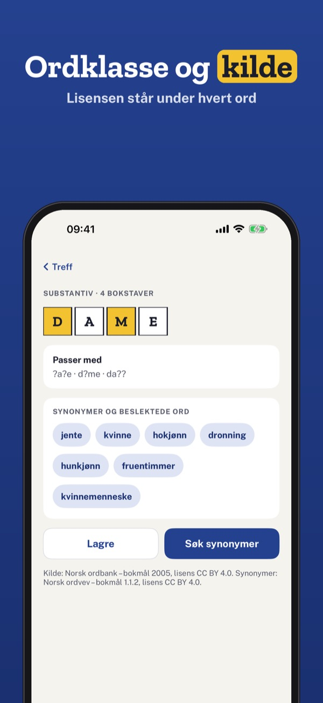
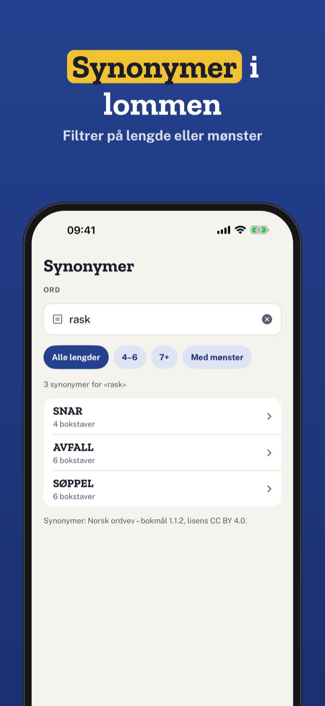
Kryssklar er en kryssordhjelp for norske, danske og finske kryss. Skriv mønsteret, og appen finner ordene som passer – rett på telefonen.
Mønstersøk i én ordbok, de første treffene, historikk og bokstavbrett kan brukes uten kjøp. Fullversjonen er et engangskjøp som låser opp alle treff, alle ordbøker, synonymer, anagram og mapper. Ingen abonnement.
Kryssklar bruker bare ordlister med åpen lisens. Navn og lisens står ved hvert ord og i Innstillinger. Appen er ikke knyttet til noen avis eller noe forlag. Ingen reklame, ingen konto.
Terms of Use (EULA): https://www.apple.com/legal/internet-services/itunes/dev/stdeula/
Privacy: https://baytechbv.github.io/privacy/kryssklar-nordic/
Mønstersøg, synonymer, anagram
Find ordet, der mangler i krydsordet: skriv de bogstaver, du kender, som ?a?e, og få forslag fra en åben dansk ordliste. Synonymer og anagram – uden net.
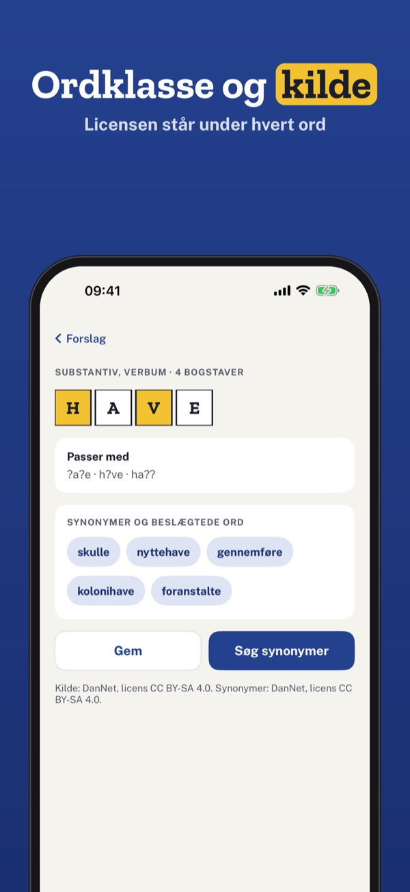
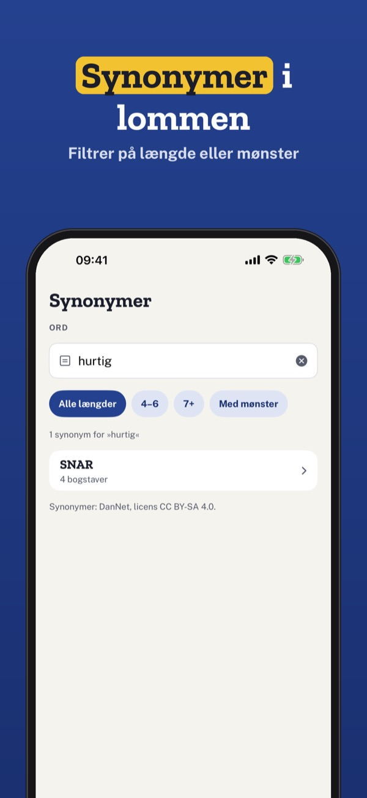
Krydsklar er en krydsordshjælp til danske, norske og finske krydsord. Skriv mønsteret, og appen finder de ord, der passer – direkte på telefonen.
Mønstersøg i én ordbog, de første forslag, historik og bogstavbræt kan bruges uden køb. Fuld version er et engangskøb, der låser alle forslag, alle ordbøger, synonymer, anagram og mapper op. Intet abonnement.
Krydsklar bruger kun ordlister med åben licens. Navn og licens står ved hvert ord og i Indstillinger. Appen er ikke tilknyttet nogen avis eller noget forlag. Ingen reklamer, ingen konto.
Terms of Use (EULA): https://www.apple.com/legal/internet-services/itunes/dev/stdeula/
Privacy: https://baytechbv.github.io/privacy/kryssklar-nordic/
Kuviohaku ja synonyymit
Löydä ristikosta puuttuva sana: kirjoita tunnetut kirjaimet muodossa ?a?e ja saat ehdotukset avoimesta suomen sanalistasta. Synonyymit ja anagrammit ilman nettiä.
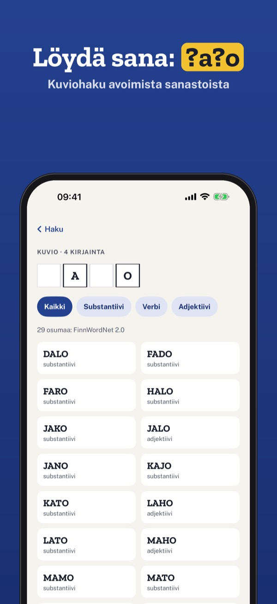
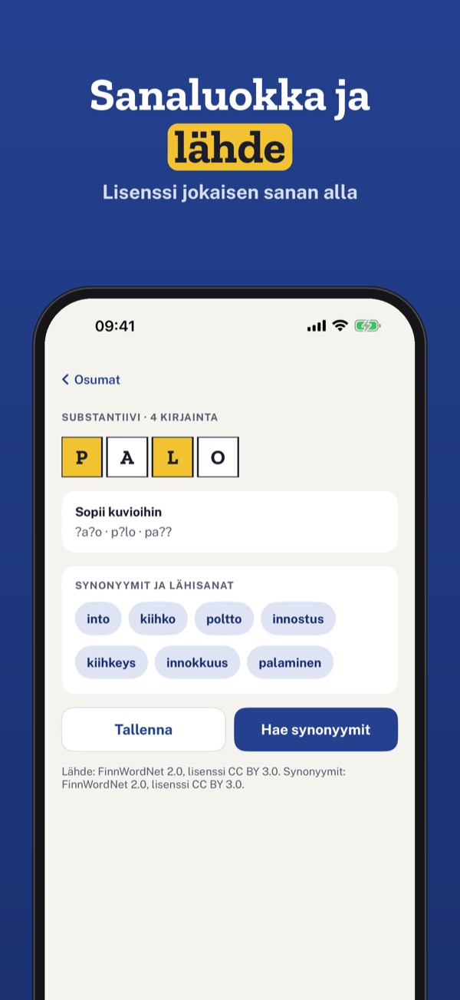
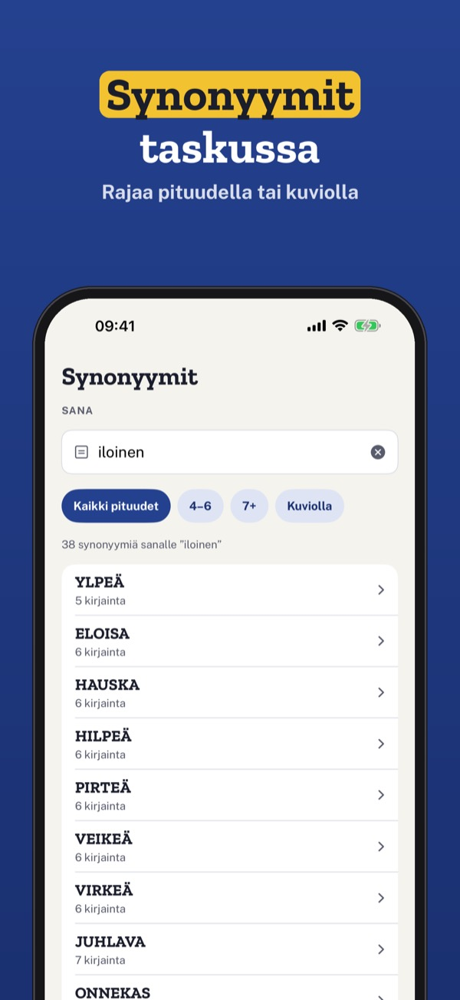
Ristikkoapu auttaa suomalaisissa, norjalaisissa ja tanskalaisissa ristikoissa. Kirjoita kuvio, ja sovellus löytää sopivat sanat suoraan puhelimessa.
Kuviohaku yhdessä sanakirjassa, ensimmäiset ehdotukset, historia ja kirjainruudukko ovat käytössä ilman ostoa. Täysi versio on kertaosto, joka avaa kaikki ehdotukset, sanakirjat, synonyymit, anagrammit ja kansiot. Ei tilausta.
Ristikkoapu käyttää vain avoimella lisenssillä julkaistuja sanastoja. Nimi ja lisenssi näkyvät jokaisen sanan kohdalla ja asetuksissa. Sovellus ei liity mihinkään lehteen tai kustantajaan. Ei mainoksia, ei tiliä.
Terms of Use (EULA): https://www.apple.com/legal/internet-services/itunes/dev/stdeula/
Privacy: https://baytechbv.github.io/privacy/kryssklar-nordic/
Mönstersök, synonymer, anagram
Hitta ordet som saknas i krysset: skriv bokstäverna du kan som ?a?e och få förslag från öppna norska, danska och finska ordlistor. Synonymer och anagram – utan nät.
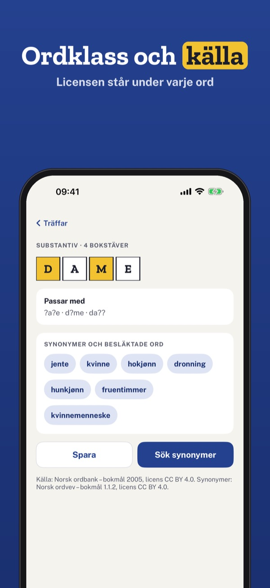
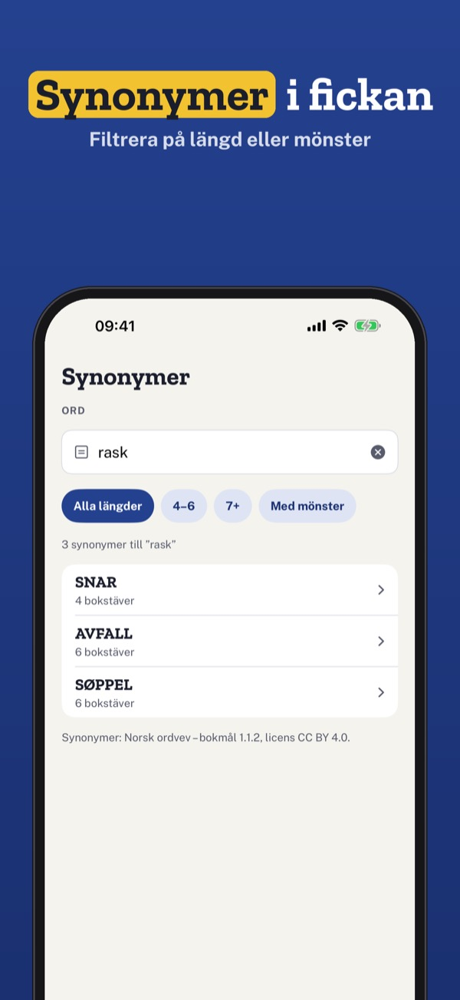
Kryssklar är en korsordshjälp för norska, danska och finska korsord som hittar orden som passar ditt mönster – direkt i telefonen, utan nät.
Mönstersök i en ordbok, de första förslagen, historik och bokstavsbrädet kan användas utan köp. Fullversionen är ett engångsköp som låser upp alla förslag, ordböcker, synonymer, anagram och mappar. Ingen prenumeration.
Kryssklar använder bara ordlistor med öppen licens. Namn och licens står vid varje ord och i Inställningar. Appen är inte knuten till någon tidning eller något förlag. Ingen reklam, inget konto.
Terms of Use (EULA): https://www.apple.com/legal/internet-services/itunes/dev/stdeula/
Privacy: https://baytechbv.github.io/privacy/kryssklar-nordic/
Patroon zoeken, synoniemen
Vind het woord dat ontbreekt: typ de letters die je weet als ?a?e en krijg suggesties uit open Noorse, Deense en Finse woordenlijsten. Offline.
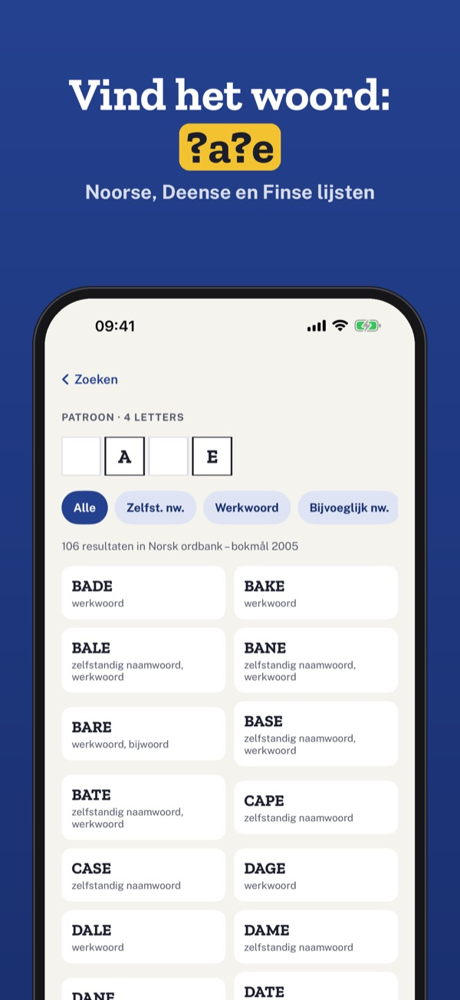
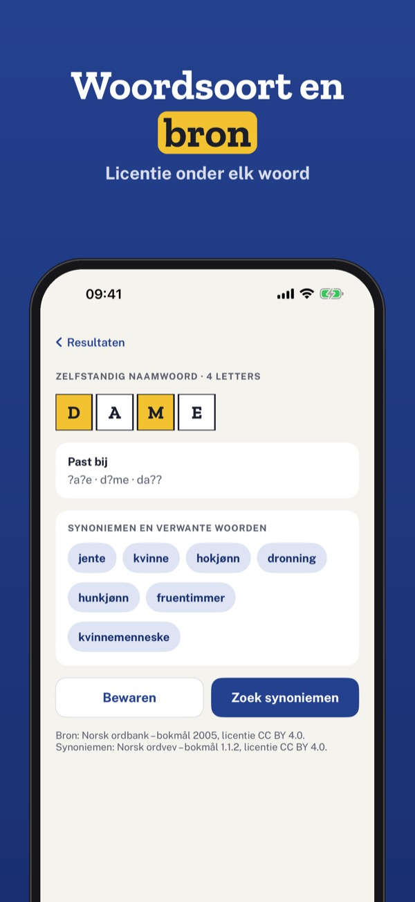
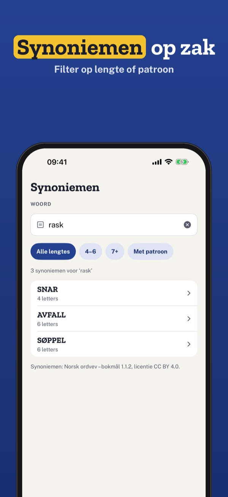
Kryssklar is een puzzelhulp voor Noorse, Deense en Finse kruiswoordpuzzels die de woorden vindt die bij je patroon passen – direct op je telefoon, zonder internet.
Patroon zoeken in één woordenboek, de eerste suggesties, geschiedenis en het letterbord gebruik je zonder aankoop. De volledige versie is een eenmalige aankoop voor alle suggesties, woordenboeken, synoniemen, anagrammen en mappen. Geen abonnement.
Kryssklar gebruikt alleen woordenlijsten met een open licentie. Naam en licentie staan bij elk woord en in Instellingen. De app is niet verbonden aan een krant of uitgever. Geen reclame, geen account.
Terms of Use (EULA): https://www.apple.com/legal/internet-services/itunes/dev/stdeula/
Privacy: https://baytechbv.github.io/privacy/kryssklar-nordic/
Muster, Synonyme, Anagramme
Finde das fehlende Wort: Tippe die bekannten Buchstaben als ?a?e ein – Vorschläge aus offenen norwegischen, dänischen und finnischen Wortlisten. Offline.
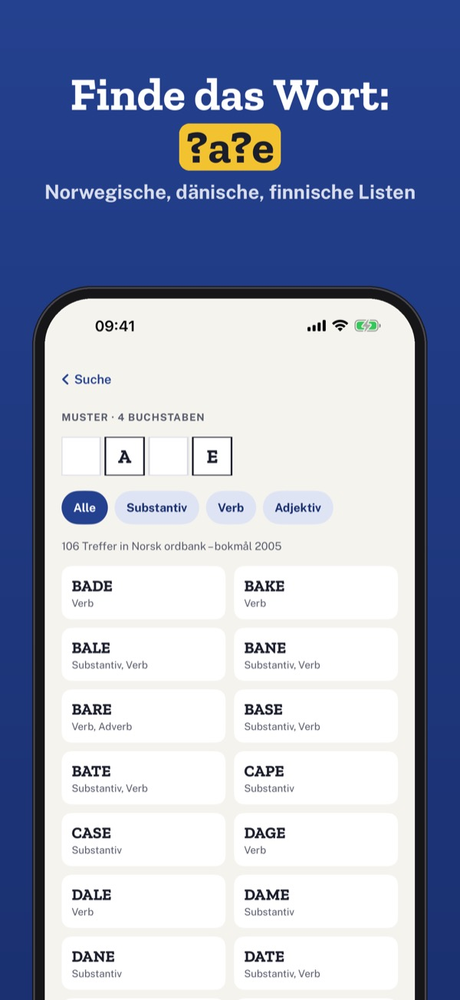
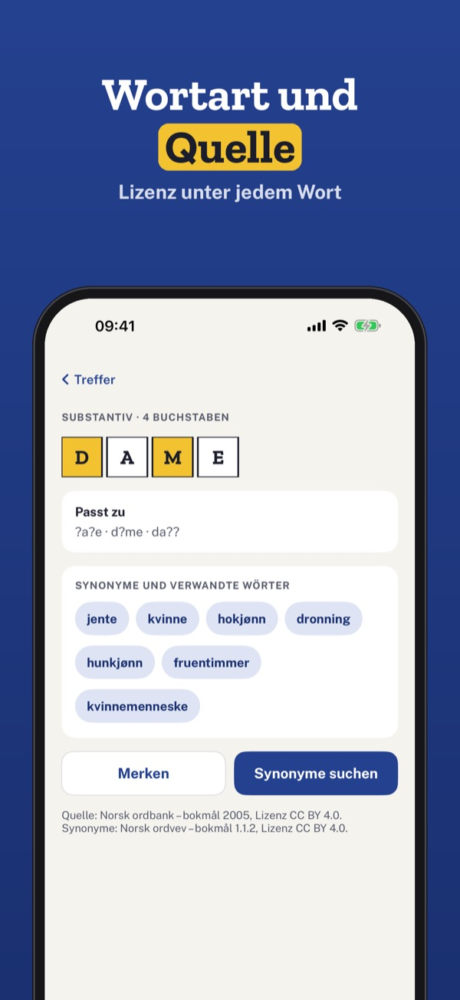
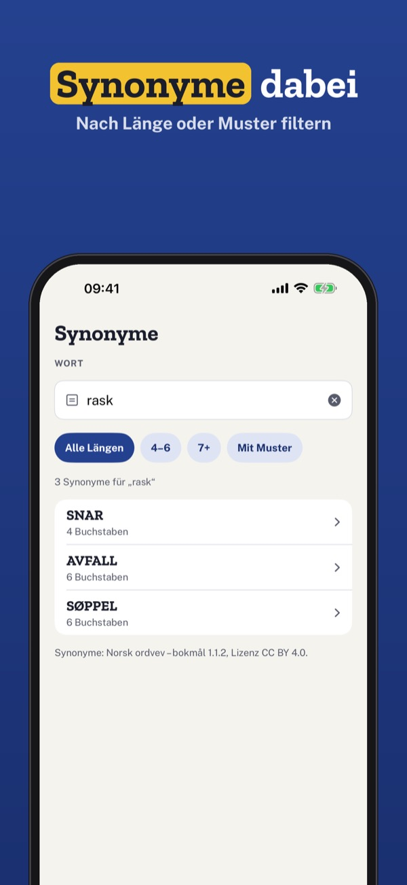
Kryssklar ist eine Kreuzworthilfe für norwegische, dänische und finnische Rätsel, die die Wörter zu deinem Muster findet – direkt auf dem Telefon, ohne Internet.
Mustersuche in einem Wörterbuch, die ersten Vorschläge, Verlauf und Buchstabenbrett nutzt du ohne Kauf. Die Vollversion ist ein Einmalkauf für alle Vorschläge, Wörterbücher, Synonyme, Anagramme und Ordner. Kein Abo.
Kryssklar nutzt nur Wortlisten mit offener Lizenz. Name und Lizenz stehen bei jedem Wort und in den Einstellungen. Die App gehört zu keiner Zeitung und keinem Verlag. Keine Werbung, kein Konto.
Terms of Use (EULA): https://www.apple.com/legal/internet-services/itunes/dev/stdeula/
Privacy: https://baytechbv.github.io/privacy/kryssklar-nordic/